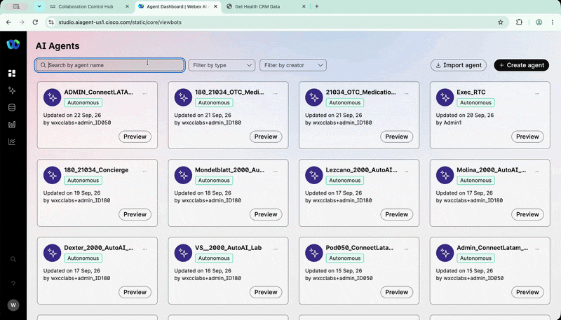
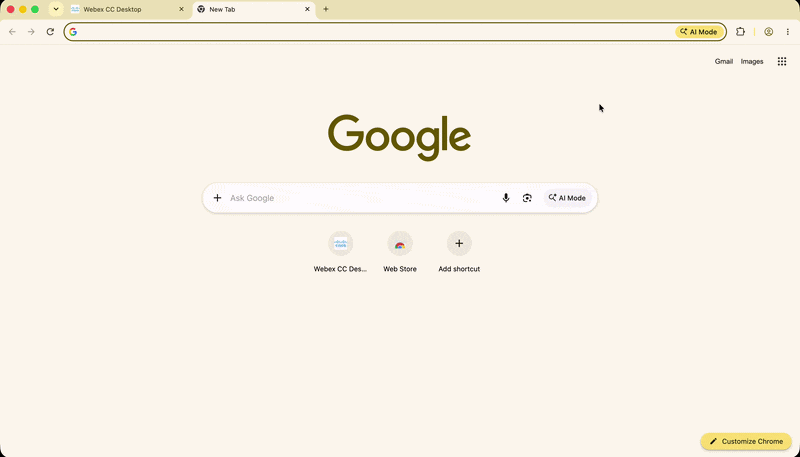
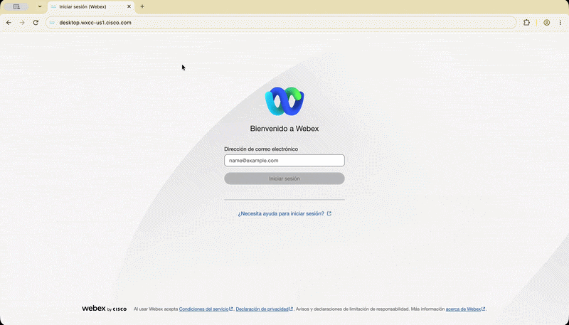
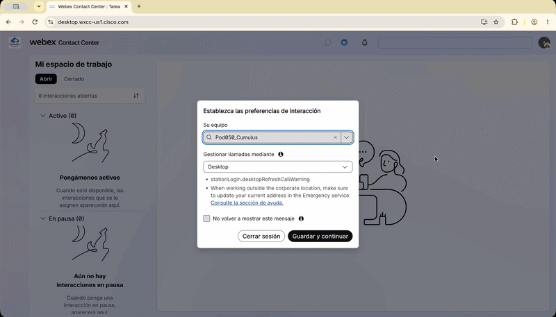
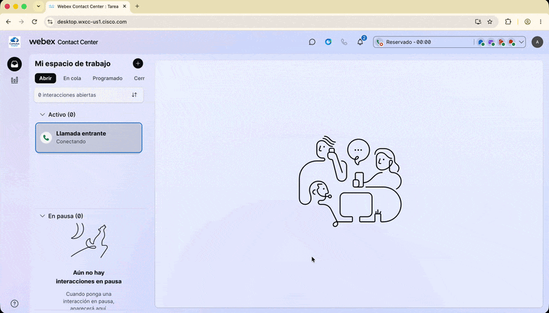

Bonus Lab - AI Assistant: Asistencia al agente humano
Agenda
| # | Actividad | Duración |
|---|---|---|
| Bonus | Habilitar Agent handover y utilizar AI Assistant con Real-Time Assist en Agent Desktop |
5 minutos |
Objetivo
En escenarios reales, un AI Agent puede necesitar transferir la interacción a un agente humano cuando recibe una solicitud compleja o fuera de su alcance.
En este Bonus Lab habilitarás Agent handover y utilizarás AI Assistant con Real-Time Assist para apoyar al agente humano durante una llamada.
1. Habilitar Agent handover
- Abre
AI Agent Studio. -
Selecciona el
Cumulus AI Agentcreado para tu Pod:PodXXX_ConnectLatam_Cumulus -
Abre la pestaña Actions.
- Habilita la acción Agent handover.
- Haz clic en Publish.
-
Agrega una nueva nota de versión, por ejemplo:
Bonus Lab - Enable Agent Handover -
Confirma la publicación.
Habilitar Agent handover
{kind=link}

Agent handover
Al habilitar Agent handover, el Cumulus AI Agent podrá transferir la llamada a un agente humano cuando el paciente lo solicite o cuando la interacción requiera asistencia adicional.
2. Configurar Chrome en español
Para que Agent Desktop muestre correctamente la interfaz en español, abre una nueva ventana de Chrome utilizando el perfil correspondiente al agente.
- Abre una nueva ventana de Chrome con el perfil
Agent. - Haz clic en el menú de tres puntos ubicado en la esquina superior derecha.
- Selecciona Settings.
-
En el buscador de configuración, escribe:
Language -
Ubica Spanish en la lista de idiomas.
- Si Spanish no aparece como idioma principal, haz clic en los tres puntos junto a Spanish.
- Selecciona Move to the top.
Configurar Chrome en español
{kind=link}

3. Iniciar sesión en Agent Desktop
- Desde Chrome, abre Agent Desktop.
-
Inicia sesión utilizando las credenciales de
Agentasignadas a tu Pod.Iniciar sesión en Agent Desktop

-
Mantén la configuración predeterminada en la ventana de inicio de sesión.
- Haz clic en Guardar y continuar.
- Si el sistema solicita permiso para utilizar el sonido, habilítalo.
{kind=link}
4. Poner el agente en estado Available
- En
Agent Desktop, verifica que el usuario esté conectado correctamente. -
Cambia el estado del agente a:
AvailableEl agente debe estar disponible para recibir la llamada transferida por el
Cumulus AI Agent.
Poner el agente en estado Available
{kind=link}

5. Realizar la llamada y solicitar transferencia
- Realiza una llamada al DID asignado a tu Pod utilizando tu teléfono celular.
- También puedes utilizar la
Webex Appcon el usuario asignado a tu Pod. - Selecciona el idioma solicitado por el Voice Flow.
- Interactúa con el
Cumulus AI Agent. -
Utiliza uno de los escenarios practicados anteriormente, por ejemplo:
Cancelar una cita
Cambiar una cita
Consultar información sobre Cumulus Hospital
Solicitar hablar con un agente humano -
Durante la conversación, solicita explícitamente la transferencia a un agente humano.
Ejemplo:
Quiero hablar con un agente humano.El Cumulus AI Agent debe ejecutar Agent handover y transferir la llamada a la Queue configurada.
6. Utilizar AI Assistant
Cuando el agente humano reciba la llamada:
- En
Agent Desktop, abre AI Assistant. - Haz clic en Get Suggestion.
- Permite que
Real-Time Assistescuche la conversación entre el paciente y el agente. -
Continúa la conversación con el paciente.
Puedes preguntar, por ejemplo:
¿Cuáles son las ubicaciones de Cumulus Hospital? -
Observa las sugerencias que aparecen en
AI Assistant. - Verifica que la respuesta sugerida esté basada en el Knowledge Base configurado para el caso de uso.
Utilizar AI Assistant en Agent Desktop
{kind=link}

Real-Time Assist
Real-Time Assist utiliza el contexto de la conversación para proporcionar sugerencias al agente humano en tiempo real.
Estas sugerencias pueden ayudar al agente a responder preguntas utilizando la información disponible en el Knowledge Base.
7 Resultado esperado
Al finalizar este Bonus Lab debes haber comprobado que:
- El
Cumulus AI Agentpuede transferir una llamada a un agente humano. - La llamada llega correctamente al
Agent Desktop. - El agente puede utilizar
AI Assistant. Real-Time Assistanaliza la conversación en tiempo real.- Las sugerencias se generan utilizando el Knowledge Base.
- El agente humano recibe apoyo contextual durante la interacción.
🏁 Bonus Completado — Felicitaciones! 🎉
Has habilitado Agent handover, transferido una llamada desde el AI Agent hacia un agente humano y utilizado AI Assistant con Real-Time Assist.
Lab realizado para Cisco Connect Latam 2026